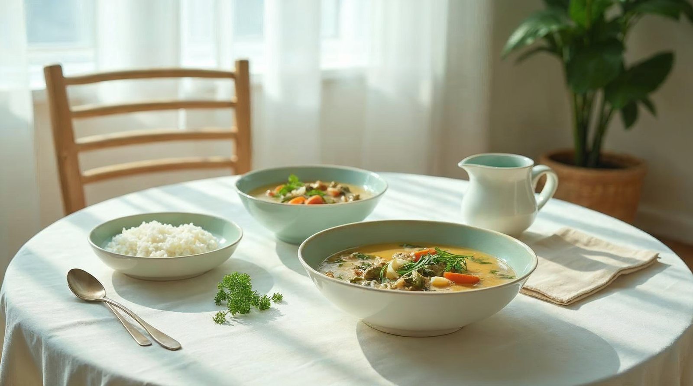
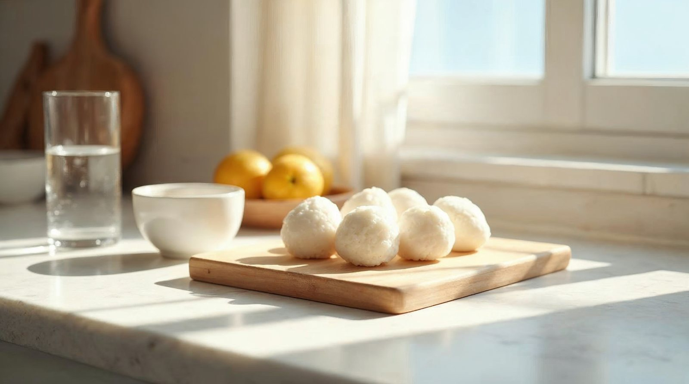
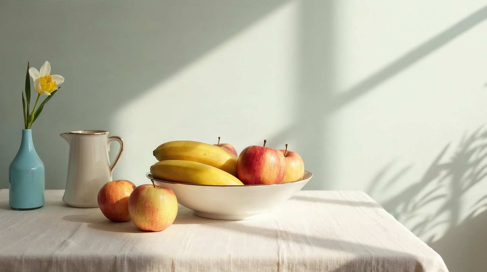
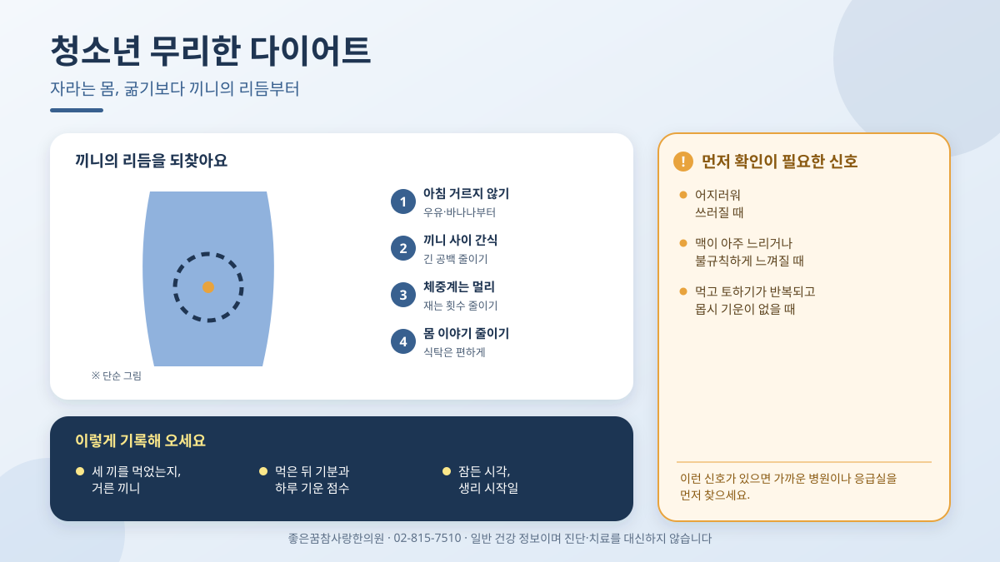

이종호 한의사 감수좋은꿈참사랑한의원 대표원장 (한의사 면허번호 19769)발행 2026-11-26 · 수정 2026-11-26
이 글의 차례
저녁 식탁에서 아이가 밥을 세 숟가락만 뜨고 일어섭니다. "배불러." 아침은 늘 거르고, 점심은 급식 대신 음료 하나로 때운다고 합니다. 방에서는 체중계 올라가는 소리가 하루에도 몇 번씩 들립니다. 옷이 헐렁해졌는데도 아이는 거울 앞에서 "아직 멀었어"라고 중얼거립니다.
요즘 진료실에서 보호자들께 자주 듣는 걱정입니다. 친구들과 비교하고, 화면 속 마른 몸을 보며 스스로를 깎아내리는 아이들이 많아졌습니다. 살을 빼고 싶은 마음 자체는 자연스러울 수 있지만, 자라는 몸을 굶겨서 빼는 방식은 생각보다 많은 것을 흔듭니다.
청소년기는 키가 자라고, 뼈가 단단해지고, 생리가 자리 잡고, 뇌가 빠르게 발달하는 시기입니다. 이 시기에 필요한 영양이 오래 부족하면 지금 당장의 피로뿐 아니라 나중의 건강까지 영향을 받을 수 있습니다.
이 글에서는 청소년의 무리한 다이어트가 몸과 마음에 어떤 영향을 주는지, 보호자가 어떤 신호를 알아보고 어떻게 말을 건네면 좋은지, 한의원에서는 무엇을 함께 살피는지 정리해 보겠습니다.
청소년의 무리한 다이어트는 어떤 모습인가요
청소년이 살을 빼는 방식은 대개 끼니를 거르는 데서 시작합니다. 처음에는 아침을 건너뛰고, 다음에는 점심을 줄이고, 저녁은 몇 숟가락으로 끝냅니다. 보호자가 눈치채지 못하도록 밥을 덜어 버리거나, 먹은 척하고 방으로 들어가기도 합니다.
- 끼니를 자주 거르고, 먹는 양이 눈에 띄게 줄었다
- 음식의 칼로리를 계속 따지고, 특정 음식을 아예 피한다
- 하루에도 여러 번 체중계에 올라간다
- 살이 빠졌는데도 아직 뚱뚱하다고 말한다
- 가족과 함께 먹는 자리를 피한다
- 굶다가 한꺼번에 많이 먹고 자책하는 일이 반복된다
- 식사 뒤 바로 화장실에 가는 일이 잦다
- 변비약이나 다이어트 약, 보조제를 몰래 먹는다
이 가운데 몇 가지가 함께 보인다면 단순한 다이어트를 넘어 음식과 몸에 대한 생각이 많이 흔들리고 있다는 신호일 수 있습니다.
왜 청소년기의 다이어트는 더 조심해야 할까요
청소년기에는 어른보다 더 많은 영양이 필요합니다. 키가 자라고 뼈에 칼슘이 쌓이며, 근육과 장기가 함께 커지는 시기이기 때문입니다. 이때 먹는 양을 크게 줄이면 몸은 자라는 데 쓸 재료를 먼저 아끼기 시작합니다.
여학생은 생리가 늦어지거나 멈출 수 있습니다. 몸이 에너지가 부족하다고 판단하면 생리를 뒤로 미루기 때문입니다. 생리가 멈춘 상태가 길어지면 뼈를 단단하게 하는 호르몬도 줄어들어, 뼈가 가장 많이 자라야 할 시기를 놓칠 수 있습니다. 남학생도 근육과 키가 자라는 흐름이 더디어질 수 있습니다.
뇌도 영향을 받습니다. 끼니를 거르면 혈당이 떨어지며 집중력이 흐려지고, 예민해지며, 기분이 쉽게 가라앉습니다. 굶는 기간이 길어질수록 머릿속이 음식 생각으로 가득 차서 오히려 공부에 집중하기 어려워지기도 합니다.
한의학에서는 먹는 것이 줄면 비위의 기운이 약해지고, 그 결과 기혈이 부족해져 얼굴이 창백하고 손발이 차며 쉽게 지치는 모습으로 나타난다고 봅니다. 머리카락이 많이 빠지고 손톱이 잘 부러지는 것도 이런 부족의 신호로 봅니다.
추위를 유난히 타고, 변비가 생기고, 잠이 얕아지는 변화도 함께 나타나곤 합니다. 아이는 이런 변화를 다이어트와 연결하지 못하는 경우가 많아서, 보호자가 먼저 알아봐 주셔야 합니다.
굶다가 몰아 먹는 고리는 왜 생길까요
무리하게 굶으면 몸은 배고픔 신호를 더 크게 보냅니다. 의지로 버티던 아이가 어느 순간 한꺼번에 많이 먹게 되고, 그 뒤에 심한 자책과 함께 다시 굶기를 반복합니다. 이 고리가 반복되면 체중은 오르내리고, 음식과의 관계는 점점 더 불편해집니다.
일부 아이들은 먹은 것을 토하거나 변비약을 먹어 몸 밖으로 내보내려 하기도 합니다. 이런 행동은 몸의 전해질 균형을 흔들고, 식도와 치아를 상하게 할 수 있습니다. 이 단계에서는 혼자, 혹은 가족만의 힘으로 풀기 어려운 경우가 많아서 전문 진료를 함께 받으시길 권합니다.
건강한 체중 관리와는 어떻게 다를까요
모든 다이어트가 위험한 것은 아닙니다. 체중이 실제로 많이 나가 소아청소년과에서 관리를 권했다면, 끼니를 거르지 않으면서 간식과 단 음료를 줄이고 움직임을 늘리는 방식은 도움이 될 수 있습니다.
차이는 방식과 마음에 있습니다. 건강한 관리는 세 끼를 지키고, 좋아하는 음식도 가끔은 즐기며, 체중이 천천히 변합니다. 무리한 다이어트는 끼니를 거르고, 특정 음식을 두려워하며, 체중 숫자에 하루의 기분이 좌우됩니다. 아이가 먹는 일 때문에 불안해하거나 죄책감을 자주 느낀다면 방식보다 마음을 먼저 살펴야 합니다.

보호자는 어떻게 말을 건네면 좋을까요
아이의 체중이나 몸매에 대한 말은 칭찬이든 걱정이든 조심스럽게 하시는 것이 좋습니다. "살 빠졌네, 보기 좋다"는 말이 아이에게는 더 굶어야 한다는 신호가 될 수 있고, "왜 이렇게 안 먹어"라는 다그침은 아이를 숨게 만듭니다.
- 체중 숫자보다 기운과 기분을 먼저 묻기: "요즘 많이 피곤해 보이는데 괜찮아?"
- 음식을 좋은 것과 나쁜 것으로 나누는 말 줄이기
- 가족 식탁을 편안한 자리로 만들기, 식사 중 성적이나 몸 이야기는 피하기
- 보호자 자신의 다이어트나 몸에 대한 불평도 아이 앞에서는 줄이기
아이가 마음을 열기까지 시간이 걸릴 수 있습니다. 한 번의 대화로 바꾸려 하기보다, 언제든 이야기할 수 있다는 신호를 꾸준히 보내 주세요. 아이가 어렵게 꺼낸 이야기에는 놀라거나 화내기보다, 말해 줘서 고맙다는 한마디를 먼저 건네 주세요.
화면 속 몸과 친구들의 말은 어떤 영향을 줄까요
요즘 아이들은 하루에도 수십, 수백 장의 몸 사진을 봅니다. 보정과 각도로 다듬어진 몸이 기준처럼 느껴지면, 자라는 중인 자기 몸이 늘 모자라 보이기 쉽습니다. 몸무게 몇 킬로그램 만들기 같은 도전 영상을 따라 하다가 끼니를 거르기 시작하는 경우도 있습니다.
친구들 사이의 말도 큰 힘을 가집니다. 농담처럼 던진 한마디가 아이에게는 오래 남아 식탁 앞에서 손을 멈추게 만들기도 합니다. 아이가 몸에 대해 부정적인 말을 자주 한다면, 그 말이 어디서 시작되었는지 조심스럽게 들어 봐 주세요.
화면을 무작정 막기보다, 화면 속 몸이 어떻게 만들어지는지 아이와 함께 이야기해 보는 것이 도움이 됩니다. 사진은 한 순간의 장면일 뿐이고, 몸은 하루하루 살아가는 것이라는 이야기를 나눠 주세요.
운동으로만 빼려는 아이라면
먹는 양은 줄이면서 운동량을 크게 늘리는 아이도 있습니다. 매일 몇 시간씩 걷거나 뛰고, 운동을 빠진 날에는 불안해하며 더 적게 먹습니다. 겉으로는 건강해 보여도 몸은 쓰는 에너지를 따라가지 못해 점점 지쳐 갑니다.
이런 경우 다리와 발에 피로 골절이 생기거나, 운동 중 어지럽고 숨이 차는 일이 생길 수 있습니다. 운동은 먹은 것을 지우는 수단이 아니라 몸을 즐겁게 쓰는 시간이 되도록, 먹는 양과 쉬는 날을 함께 챙겨 주세요.
스스로 점검해 보세요
보호자가 지난 한 달 동안 본 아이의 모습을 떠올리며 체크해 보세요.
- 하루 세 끼 가운데 두 끼 이상 거르는 날이 많다
- 최근 몇 달 사이 체중이 눈에 띄게 줄었다
- 생리가 늦어지거나 몇 달째 없다
- 손발이 차고 쉽게 지치며 어지럽다고 한다
- 머리카락이 많이 빠지고 피부가 건조해졌다
- 음식 이야기에 예민해지고 가족 식사를 피한다
- 굶다가 몰아 먹고 자책하는 일이 반복된다
먼저 이렇게 여쭙니다
처음 오시면 아이와 보호자께 이렇게 여쭙니다. 아이에게는 따로 이야기할 시간을 드려 편하게 대답할 수 있도록 합니다.
- 언제부터, 어떤 방식으로 식사를 줄였나요?
- 최근 몇 달 동안 체중은 얼마나 바뀌었나요?
- 하루에 실제로 먹는 것은 무엇인가요?
- 생리 주기는 어떤가요? 남학생이라면 키가 자라는 흐름은 어떤가요?
- 어지럼, 피로, 추위 타기, 변비 같은 불편이 있나요?
- 다이어트 약이나 보조제, 변비약을 먹은 적이 있나요?
- 몸에 대한 생각 때문에 마음이 힘든 적이 있나요?
질문을 받으며 아이가 불편해하면 오늘은 거기까지만 이야기합니다. 진료실이 아이를 꾸짖는 곳이 아니라 자기 몸을 이해하는 곳이 되도록 천천히 이어 갑니다.

일상에서 먼저 해 볼 수 있는 것
목표는 살을 찌우는 것이 아니라, 끼니의 리듬을 되찾는 것입니다. 아이와 함께 아래에서 한두 가지를 정해 시작해 보세요.
- 아침은 양보다 거르지 않는 것을 먼저: 우유 한 잔, 바나나 하나부터
- 세 끼 사이에 너무 긴 공백이 생기지 않게 간식 한 번 넣기
- 밥과 반찬을 함께, 단백질 반찬 한 가지는 챙기기
- 체중계는 집 안 보이는 곳에 두고, 재는 횟수 줄이기
- 움직임은 걷기나 줄넘기처럼 즐겁게, 굶은 상태에서 무리한 운동은 피하기
- 화면 속 몸매 영상을 보는 시간 줄이기
음식을 억지로 먹이려 하면 식탁이 싸움터가 되기 쉽습니다. 아이가 먹을 수 있는 음식부터 조금씩 늘려 가고, 한 끼를 잘 먹은 날에는 그 자체를 알아봐 주세요.
급식을 거르는 것이 걱정된다면 담임 선생님이나 보건 선생님과 조용히 상의해 보셔도 좋습니다. 학교에서 보이는 모습을 함께 나누면 아이가 하루를 어떻게 보내는지 더 정확히 알 수 있고, 아이가 도움이 필요할 때 손을 내밀 어른이 한 사람 더 생깁니다.
한의원에서 함께 살필 수 있는 경우
- 식사량이 줄며 손발이 차고 쉽게 지치는 경우
- 다이어트 뒤 생리 주기가 흐트러지거나 늦어진 경우
- 입맛이 없고 조금만 먹어도 더부룩해 식사를 이어 가기 어려운 경우
- 굶다가 몰아 먹는 고리와 함께 변비, 소화불량이 반복되는 경우
- 체중이 실제로 많이 나가 끼니를 지키며 관리하고 싶은 경우
좋은꿈참사랑한의원에서는 진찰을 먼저 하고, 그 결과에 따라 식사 리듬 조정과 함께 침, 한약 상담 가운데 지금 아이에게 맞는 것을 고릅니다. 청소년에게 식욕을 누르는 방식의 다이어트 처방은 하지 않으며, 한약을 상의할 때는 먹고 있는 약과 보조제를 모두 확인하고 보호자와 함께 신중하게 정합니다.
체중이 짧은 기간에 크게 줄었거나, 생리가 몇 달째 없거나, 먹고 토하는 일이 반복된다면 소아청소년과나 정신건강의학과 진료를 함께 받으시도록 안내합니다. 다른 병원에서 처방받은 약은 그대로 이어 가시면 됩니다.
이렇게 기록해 오시면 상담이 쉬워집니다
2주 정도 보호자와 아이가 함께, 혹은 아이 스스로 간단히 적어 보세요. 칼로리를 세는 기록이 아니라 리듬을 보는 기록입니다.
- 세 끼를 먹었는지, 거른 끼니는 언제인지
- 먹은 뒤의 기분: 편했는지, 불안했는지
- 하루 기운 점수(0~10)와 어지럼 여부
- 잠든 시각과 깬 시각
- 여학생이라면 생리 시작일
기록에 체중은 적지 않으셔도 됩니다. 체중은 진료실에서 필요할 때 함께 재면 충분합니다. 숫자 대신 기운과 기분의 흐름을 보는 것이 이 시기에 더 중요합니다.
보호자께서도 아이 몰래 체중이나 식사량을 따로 적어 두기보다, 아이와 함께 보는 기록으로 만들어 주세요. 몰래 지켜본다는 느낌이 들면 아이는 더 숨기게 됩니다. 함께 적고 함께 보는 기록은 그 자체로 아이에게 혼자가 아니라는 신호가 됩니다.

자라는 몸을 믿어 주는 시간
청소년의 몸은 아직 자라는 중입니다. 지금의 체형이 앞으로의 체형을 정하는 것도 아닙니다. 굶어서 만든 몸보다, 잘 먹고 잘 자고 잘 움직이며 자라는 몸이 훨씬 단단합니다.
이번 주에는 아침 한 끼를 거르지 않는 것부터 아이와 함께 약속해 보세요. 다음에 오시면 기록을 함께 펼쳐 보며 다음 걸음을 정하겠습니다.
이런 증상은 먼저 확인이 필요합니다
- 어지러워 쓰러지거나, 맥이 아주 느리거나 불규칙하게 느껴지는 경우
- 먹은 뒤 일부러 토하는 일이 반복되거나, 짧은 기간에 체중이 크게 줄고 몹시 기운이 없는 경우
이런 신호가 있으면 한의원보다 가까운 병원이나 응급실을 먼저 찾으세요.
함께 읽으면 좋은 글
- 체중이 갑자기 늘거나 줄고 나서 생리 주기가 불규칙해졌을 때는 어떻게 하나요?
- 폭식 충동이 올 때는 어떤 점을 먼저 살펴보나요?
- 중고등학생 아이가 아침을 거르고 등교할 때는 어떻게 살피나요?
- 속상하거나 지친 날이면 배가 고프지 않아도 계속 먹게 되는 감정적 폭식은 어떻게 살피나요?
- 생리가 몇 달째 없을 때(무월경)는 무엇을 먼저 확인하고 어떻게 살피나요?

여쭙는 것
- 언제부터, 어떤 방식으로 식사를 줄였나요?
- 최근 몇 달 동안 체중은 얼마나 바뀌었나요?
- 하루에 실제로 먹는 것은 무엇인가요?
생활에서 해 볼 것
- 아침은 양보다 거르지 않는 것을 먼저: 우유 한 잔, 바나나 하나부터
- 세 끼 사이에 너무 긴 공백이 생기지 않게 간식 한 번 넣기
- 밥과 반찬을 함께, 단백질 반찬 한 가지는 챙기기
한의원에서 함께 살필 것
- 식사량이 줄며 손발이 차고 쉽게 지치는 경우
- 다이어트 뒤 생리 주기가 흐트러지거나 늦어진 경우
- 입맛이 없고 조금만 먹어도 더부룩해 식사를 이어 가기 어려운 경우
먼저 확인이 필요한 신호
- 어지러워 쓰러지거나, 맥이 아주 느리거나 불규칙하게 느껴지는 경우
- 먹은 뒤 일부러 토하는 일이 반복되거나, 짧은 기간에 체중이 크게 줄고 몹시 기운이…
한눈에 보는 표
| 구분 | 핵심 |
|---|---|
| 여쭙는 것 | 언제부터, 어떤 방식으로 식사를 줄였나요? 최근 몇 달 동안 체중은 얼마나 바뀌었나요? |
| 생활에서 해 볼 것 | 아침은 양보다 거르지 않는 것을 먼저: 우유 한 잔, 바나나 하나부터 세 끼 사이에 너무 긴 공백이 생기지 않게 간식 한 번 넣기 |
| 한의원에서 함께 살필 것 | 식사량이 줄며 손발이 차고 쉽게 지치는 경우 다이어트 뒤 생리 주기가 흐트러지거나 늦어진 경우 |
| 먼저 확인이 필요한 신호 | 어지러워 쓰러지거나, 맥이 아주 느리거나 불규칙하게 느껴지는 경우 먹은 뒤 일부러 토하는 일이 반복되거나, 짧은 기간에 체중이 크게 줄고 몹시 기운이 없는 경우 |
자주 묻는 질문
아이가 통통한 편인데 다이어트를 말려야 하나요?
체중을 관리하는 것 자체보다 방식이 중요합니다. 세 끼를 지키면서 단 음료와 간식을 줄이고 움직임을 늘리는 쪽이라면 함께 도와주시고, 끼니를 거르거나 굶는 방식이라면 방향을 바꾸도록 이야기해 주세요.
청소년도 다이어트 한약을 먹을 수 있나요?
자라는 시기에는 식욕을 누르는 방식의 처방을 권하지 않습니다. 진찰한 뒤 소화와 기운, 식사 리듬을 돕는 쪽으로 필요할 때만 보호자와 상의해 신중하게 정합니다.
생리가 멈췄는데 다시 먹으면 돌아오나요?
식사와 체중이 회복되면서 다시 돌아오는 경우가 많지만, 시간이 걸리고 다른 원인이 있을 수도 있습니다. 몇 달째 없다면 산부인과나 소아청소년과에서 먼저 확인해 보시길 권합니다.
아이가 진료를 받으러 가기 싫어하면 어떻게 하나요?
다이어트 이야기보다 아이가 불편해하는 피로나 어지럼, 소화 문제로 시작해 보세요. 진료실에서도 체중보다 몸의 기운을 먼저 이야기합니다.
좋은꿈참사랑한의원은 재진 때 지난번 이야기부터 이어서 여쭙니다. 진료시간과 예약은 오시는 길에서 확인하세요.
어디서 상담받을 수 있나요?
좋은꿈참사랑한의원은 서울 동작구 만양로2길 2 신성빌딩 3층·5층(서울 동작구 상도동, 7호선 상도역 3번 출구 근처)에 있습니다. 한의사 3명(이종호 대표원장, 조영기 수석진료원장, 정원영 진료원장)이 진료합니다. 진료시간은 평일 09:30~20:00(점심 13:00~14:00), 토·일·공휴일 09:30~15:00이며, 방문 전 전화로 확인을 권합니다. 예약은 네이버 예약, 카카오톡 상담, 전화 02-815-7510로 받습니다.
이 글은 일반적인 건강 정보이며 개인의 진단이나 치료를 대신하지 않습니다. 증상이 있거나 복용 중인 약이 있다면 진료를 통해 확인하세요. 치료 효과는 개인마다 다를 수 있습니다.
작성 기준: 일반적으로 알려져 있는 건강 정보를 참고해 정리했습니다(대표원장 감수). 증상 기록은 1~2주 동안 하루 1회, 비슷한 시간에 적어 오시면 지난 상태와 비교하기 쉽습니다.